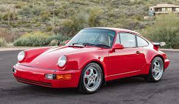

The 911 Turbo (type 964) had a wider body with significantly more flared wheel housings compared to the Carrera models. At the rear, the rear wing largely adopted from the Turbo 3.3 of the G model as well as two oval tailpipes emphasised the vehicle's uniqueness. Exhaust gases only escaped through the left pipe when the boost-pressure control valve of the turbocharger was open. Turbo 3.6 Coupe 2D with 355 horsepower and a 0-60 time of 4.7 seconds. Porsche.com
